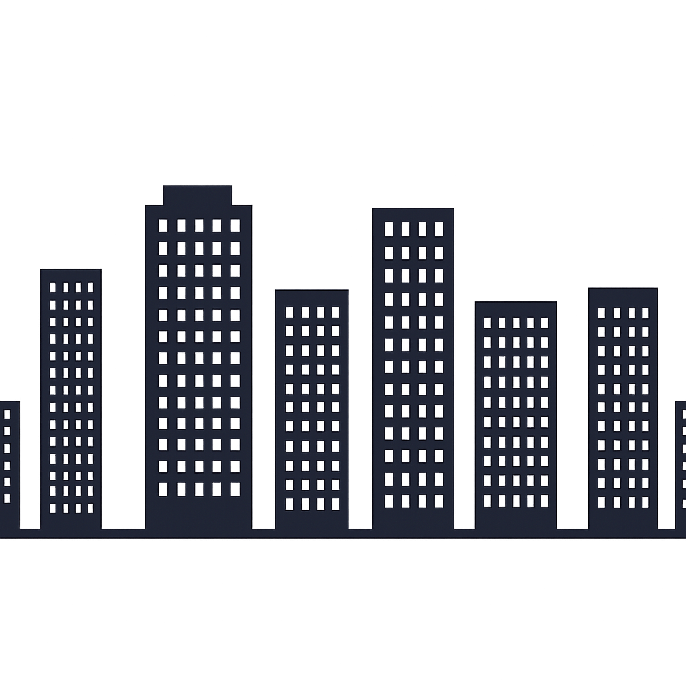

Radio Lugano 1y2
Una radio. Un viaje. Todo un país.
La radio comunitaria de Villa Lugano. Música, charla y la voz del barrio, sonando todos los días.
Transmisión en vivo
Tocá play para escuchar
La Mañana del Barrio
con Carlos Funes · 08:00 a 11:00
En vivo
Transmisión en directo
El video se carga solo cuando lo reproducís.
Programación
-
06 – 08
Amanece en Lugano
Marta Quiroga
-
08 – 11
Ahora
La Mañana del Barrio
Carlos Funes
-
11 – 13
Cumbia y Café
Dúo Las Torres
-
13 – 16
Sobremesa Federal
Pedro Ávila
-
16 – 19
Ruta Sonora
Sofía Medina
-
19 – 22
Voces del Sur
Equipo Lugano
-
22 – 06
Trasnoche Viajera
Selección automática
Contacto
Villa Lugano
Comuna 8 · CABA, Argentina

Una radio. Un viaje. Todo un país.